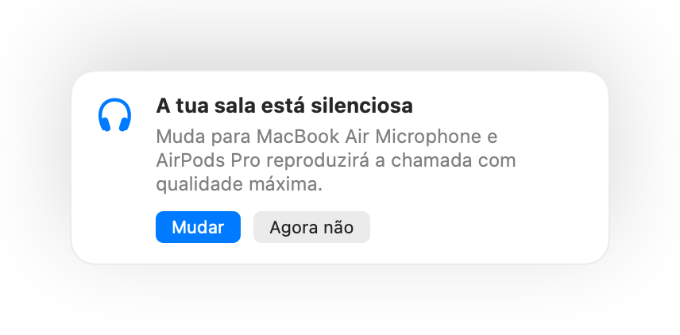

Prime os teus AirPods para silenciar
Durante qualquer chamada, prime a haste uma vez para silenciar e outra para ativar. Funciona até no Chrome, onde o Google Meet e outras videochamadas ignoram a pressão dos AirPods.
Muffle para Mac
Prime os teus AirPods ou usa um atalho de teclado. O Muffle desliga o microfone diretamente, para que o Google Meet, Zoom, Teams, Slack e todas as outras apps só ouçam silêncio.
Grátis durante 3 dias. Depois, pagamento único sem subscrição. Para o macOS 14 Sonoma e posterior.
Silencia, escolhe o teu microfone, bloqueia o respetivo nível e ativa ou desativa funcionalidades, diretamente a partir da barra de menus.
O Muffle silencia o microfone ao nível do hardware, por isso não importa que app, navegador ou separador estejas a utilizar.
Durante qualquer chamada, prime a haste. O Muffle desliga o microfone diretamente, para que o Meet, o Zoom, o Teams e qualquer outra app não ouçam nada.
O Muffle reconhece a tua voz e avisa-te, antes de explicares toda a tua ideia a ninguém.

A maioria dos botões para silenciar apenas silencia uma app. O Muffle desliga o próprio microfone, pelo que todas as apps no teu Mac ouvem silêncio.
Durante qualquer chamada, prime a haste uma vez para silenciar e outra para ativar. Funciona até no Chrome, onde o Google Meet e outras videochamadas ignoram a pressão dos AirPods.
Se começares a falar enquanto estás silenciado, o Muffle avisa-te antes de começares a explicar toda a tua ideia a ninguém.

Controlo-Opção-M silencia o teu microfone em qualquer lugar, mesmo com a reunião num separador em segundo plano. Mantém premido para falar e larga para silenciar novamente.
Um pequeno botão flutuante mostra o estado do teu microfone durante as chamadas. Clica para silenciar ou ativar.

Escolhe como funciona o teu atalho: toca para silenciar ou ativar, mantém premido para falar ou mantém premido para silenciar uma tosse. Adiciona teclas separadas para silenciar e ativar, ou mantém premida uma tecla como ⌥ direita ou um botão adicional do rato.

Ativaste o microfone para dizer apenas uma coisa? Se ficares em silêncio durante o tempo que escolheres, o Muffle silencia-te novamente. Só a tua voz conta, não o ruído de fundo nem as teclas.
Com AirPods numa sala silenciosa, o Muffle sugere o microfone do teu Mac para que os AirPods reproduzam a chamada com qualidade máxima. Quando há barulho, sugere o microfone dos AirPods.

O Chrome, o Zoom e o Teams alteram o nível do microfone sozinhos. Bloqueia o nível e o Muffle repõe o valor correto.
Inicia todas as chamadas silenciado, ativa o microfone novamente quando uma chamada terminar e silencia sempre que bloqueares o ecrã do teu Mac.

Se os teus auscultadores se desligarem a meio de uma chamada, o Muffle silencia antes de a chamada mudar para o microfone do Mac e transmitir o som de toda a sala.
Silencia através da app Atalhos, da Siri, de uma Stream Deck, do Raycast ou de um botão na Central de controlo.
Um brilho verde ou vermelho à volta do ecrã, um ícone colorido na barra de menus, um botão flutuante e um som que podes desativar para cada microfone. Ativa os que preferires.
O Muffle nunca grava, armazena nem envia áudio. Apenas liga e desliga o teu microfone e mede o volume da fala. Sem contas, sem análises e sem monitorização.
Instala o Muffle a partir da Mac App Store e permite o acesso ao microfone.
Entra numa chamada ou reunião em qualquer app, como habitual.
Prime os teus AirPods, prime Controlo-Opção-M ou clica no ícone da barra de menus para silenciar.
Sim. O Chrome não transmite a pressão de silenciar dos AirPods para as chamadas web, pelo que o Muffle interceta o comando e desliga o microfone diretamente. O mesmo se aplica a qualquer chamada num separador do navegador.
A tua app de chamada pode continuar a mostrar o microfone ativo, porque o Muffle desliga o microfone físico e não o botão da app. As pessoas ouvem apenas silêncio de qualquer forma. O ícone do Muffle na barra de menus fica vermelho enquanto estiveres silenciado.
AirPods Pro, AirPods 3 e posteriores, e AirPods Max, além de modelos Beats compatíveis com controlos de chamada. O atalho de teclado e a barra de menus funcionam com qualquer microfone.
Sim. O Muffle funciona com todas as apps no teu Mac que utilizem o microfone, tanto aplicações de computador como chamadas no navegador.
Não. Experimenta todas as funcionalidades gratuitamente durante 3 dias e depois desbloqueia o Muffle com uma compra única.
O macOS só transmite a pressão dos AirPods a apps que estejam a utilizar o microfone, pelo que o Muffle mantém uma ligação silenciosa aberta durante as chamadas. Não é gravado nada.
O Muffle ativa o teu microfone novamente quando fecha, para que nunca fiques sem som.
macOS 14 Sonoma e posterior. O botão na Central de controlo exige o macOS 26 ou posterior.
Sim. Escolhe Premir para falar nas Definições e mantém o teu atalho premido para falar. Também podes manter premida uma tecla individual como ⌥ direita ou fn, ou um botão adicional do rato.
Quando uma chamada utiliza o microfone dos AirPods, os AirPods mudam para o modo de chamada, que reproduz áudio com qualidade inferior. Numa sala silenciosa, o Muffle sugere antes o microfone do teu Mac, para que os AirPods continuem a tocar com qualidade máxima.
Não. O Muffle reconhece a fala através da análise de som no dispositivo da Apple, por isso apenas a voz conta. As teclas, os cliques e o ruído de fundo não contam e nada é gravado.
Respostas práticas e rápidas para silenciares o microfone no Mac, em qualquer app.
O Muffle é gratuito para experimentar durante 3 dias.